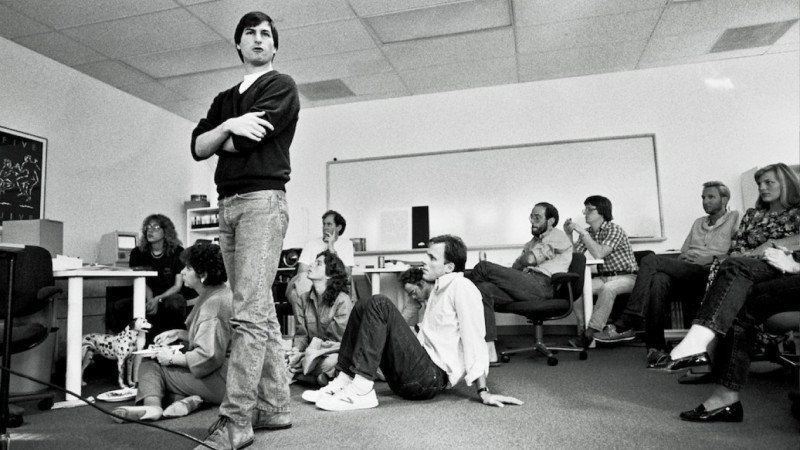

Stephen Paul Jobs is an American entrepreneur, inventor and industrial designer, widely recognized as a pioneer of the information technology era. One of the founders, chairman of the Board of Directors and CEO of Apple Corporation. One of the founders and CEO of Pixar film studio.
The iPhone is a line of smartphones designed and marketed by Apple Inc. These devices use Apple's iOS mobile operating system. The first-generation iPhone was announced by then-Apple CEO Steve Jobs on January 9, 2007. Since then, Apple has annually released new iPhone models and iOS updates. As of November 1, 2018, more than 2.2 billion iPhones had been sold. As of 2022, the iPhone accounts for 15.6% of global smartphone market share. The iPhone was the first mobile phone with multi-touch technology. Since the iPhone's launch, it gained larger screen sizes, video-recording, waterproofing, and many accessibility features. Up to iPhone 8 and 8 Plus, iPhones had a single button on the front panel with the Touch ID fingerprint sensor. Since iPhone X, iPhone models have switched to a nearly bezel-less front screen design with Face ID facial recognition, and app switching activated by gestures. Touch ID is still used for Apple's currently-produced iPhone SE series.
38 iPhone models have been produced. The models in bold are devices of the latest generation:
Apple Company has achieved a rare fit in the technology arena; it has been flexible in its management procedure to a level of allowing creativity and innovation. This has resulted in the development of a culture that tends to distance itself from authoritarian kind of leadership. Apple Company has existed and improved its services and products as a result of the huge profits that they obtain. That makes them more competitive than other information technology companies. Apple Company has strived to create a brand that is recognized not only in America but also the rest of the world; new markets are emerging in Africa and Asia. The weaknesses of Apple Company have been a source of continuous research on the ways to turn them into profitable methods.